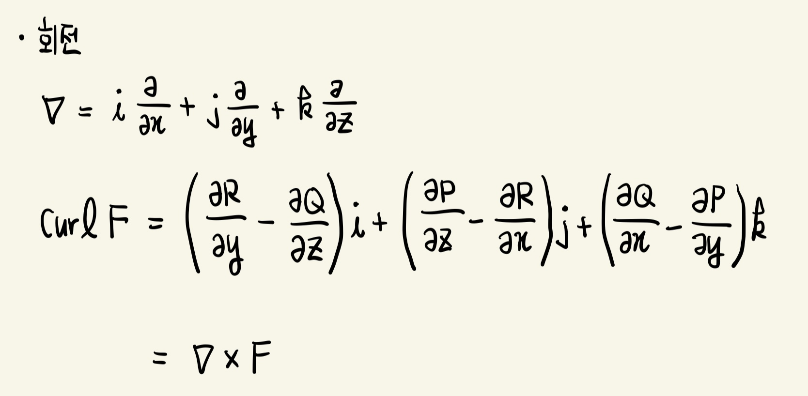
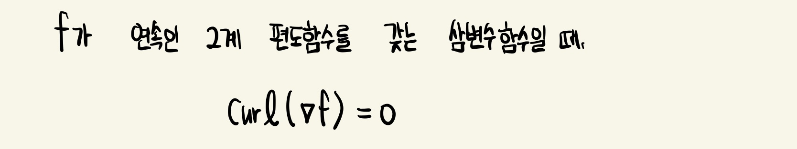
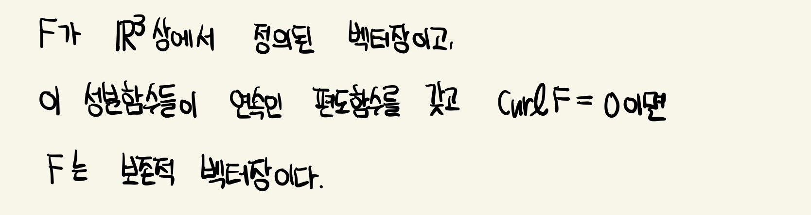
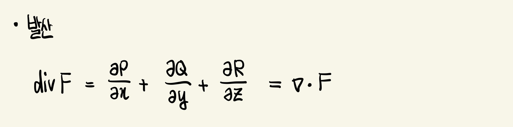
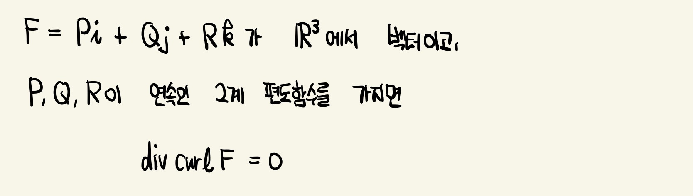
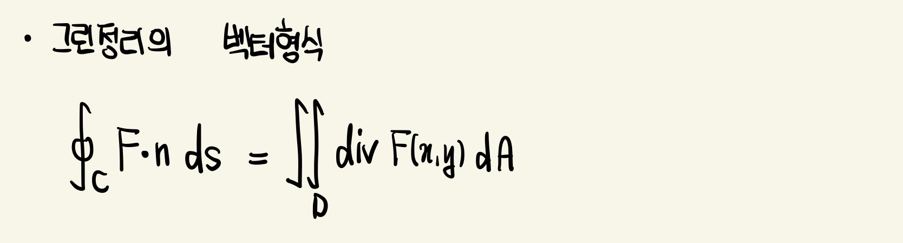

회전 (Curl)
회전은 아래와 같이 ℝ^3상의 벡터장으로 정의됨

아래 정리는 기울기 벡터장의 회전이 0이라는 것을 말해줌


유체에서 (x,y,z) 근처 질점들은 curlF(x,y,z)의 방향을 가리키는 축에 대해 회전하려는 경향이 있고,
이 회전벡터들의 길이는 질점들이 얼마나 빨리 축 둘레를 돌려고 하는가를 가늠하는 척도임
한 점 P에서 curlF=0이면, 유체는 이 점 P에서 회전하지 않으므로 F를 점 P에서 비회전적(irrotational)이라 부름
발산 (Divergence)
curlF는 벡터장이지만, divF는 스칼라장
 
F(x,y,z)가 유체의 속도일 때 divF(x,y,z)는 단위 부피당 점 (x,y,z)로부터 흐르는 유체의 질량의 순변화율(시간에 관한)을 나타냄
divF(x,y,z)는 점 (x,y,z)로부터 발산하는 유체의 경향을 측정함
divF=0일 때, F를 압축불가능이라고 함
그린정리의 벡터형식
C 위에서 F의 법선성분의 선적분은 C에 의하여 둘러싸인 영역 D에서 F의 발산의 이중적분과 같음
